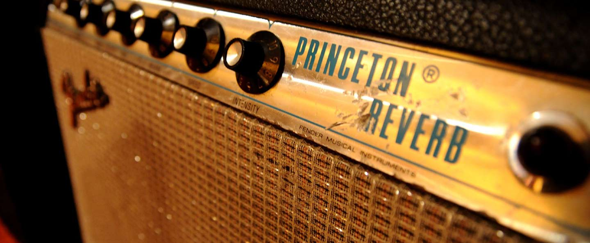

Fender amplifiers are a series of electric instrument amplifiers produced by the Fender Musical Instruments Corporation. The first guitar amplifiers attributed to Leo Fender were manufactured by the K&F Manufacturing Corporation (K&F) between 1945 and 1946. Later, Fender began building its own line of electric guitars. Fender amplifiers would become favorite of many famous guitarists such as Jimi Hendrix, Eric Clapton, and Stevie Ray Vaughan, also known in these cases for playing Fender guitars.
Fender amps have come in many configurations and styles. The early K&F and Fender amplifiers relied upon vacuum tube circuitry, with solid-state models appearing in the late 1960s. Fender frequently updated the internal circuitry of its amps, and changed their appearance throughout its history.
The first "Fender" amplifiers were manufactured by Leo Fender and Doc Kauffman,[1] doing business as the K&F Manufacturing Corporation.[2] The amplifiers were housed in a steel case and most were finished in a "gray crinkle" finish that was baked in the Kauffman family oven. They were made in three sizes, 1×8" (one 8-inch speaker), 1×10", and 1×15". They are all very rare today and few have survived.
The first amplifiers made in-house by the Fender Electric Instrument Company were a significant step up in size and function to the small, nameless amps that preceded them, however, they didn't have technological advancements such as circuit boards in their designs. They were constructed out of spare hardwood held by the Fender company at the time and were hence given the name 'woodie' later on by collectors. These amps were the Princeton, the Deluxe and the Professional. The Princeton was a small six watt amp with an 8" Jensen field-coil speaker. This amp had no controls as it was designed for the guitar to solely control the volume and was simply turned on by plugging/unplugging into the wall plug. The Deluxe was a larger amp with a Jensen 10” field-coil speaker and five tubes in a 14-watt design. It was the most popular amp of this era, with most amps surviving from this era today being Deluxes. The rarest of all the original 'woodie' series was the Professional. It was the largest of the trio featuring Jensen 15” field-coil speaker and 6 tubes delivering 25 watts of power.
The production of these amps ceased in 1948, however, the names of the amps became enduring ones for Fender.
In 1948 Fender entered a new phase of amplifier construction dubbed 'the tweed phase'. This phase saw the company drape their amplifiers in a cloth covering, which consists of varnished cotton twill. This is incorrectly called tweed because of its feel and appearance (actual tweed is a rough woolen fabric). The amps made during this period were a considerable leap forward for Fender, and they are often praised for their sound and their circuitry. Fender generally stopped using the twill covering in 1960, though the Harvard was still covered in twill until 1963, and the Champ until 1964.
At the beginning of the "tweed" era, Fender constructed many of its cabinets in "TV front" style, amps which bore a strong resemblance to TVs of the time. In 1955 they shifted to the "wide panel" design, a more conventional design where the top and bottom panels are wider than the side. Fender later constructed them with "narrow panel", in which all the panels have more or less the same width.
The Brown Panel series was introduced in 1959. The name 'brown panel' stems from the brown-colored control panels, common to both the brown- and cream/blonde- Tolex-covered amps. The brown panel amps originally featured a dark maroon or "oxblood" grillcloth, which was changed to "wheat" in 1962-63.
The shift from tweed to Tolex occurred in limited production in 1960. The tolex on the earliest versions in this era was pinkish brown and rough textured. There were only six amplifiers covered in tolex originally, the Professional Series: Bandmaster, Concert, Pro, Super, Twin (production halted Feb-May 1960, resumed as the blonde Twin) and Vibrasonic. The cheaper student models (Champ, Harvard, Princeton) remained tweed-covered until later in the decade. The 1x10" Harvard was discontinued in 1961(though in 1962-63 Fender built a small number of "Harvards" which were actually assembled from leftover tweed-Princeton parts given Harvard nameplates). The 1x8" Champ remained tweed-covered until 1963 when it made the change to black tolex, and the Princeton acquired its brown tolex in 1962 along with a complete redesign that saw it adopt more powerful twin-6v6 circuit and a larger speaker: 1x10".
The Black Panel amplifiers were produced between 1963 and mid 1968 with the earliest black panel piggyback and large combo amps (Twin) having bodies covered in blonde tolex, with the new black control panel. The white control knobs continued briefly before giving way to black skirted "hat shaped" numbered knobs. These amps had new circuitry featuring bright switches.
Black Panel cosmetics do not necessarily mean "pre-CBS" since the CBS company takeover took place in 1965 and amps with blackfaced cosmetics were produced up to 1967. After the buyout the front panels were changed from "Fender Electric Instrument Co." to "Fender Musical Instruments". No real changes were made to the amps until silver panel amps of 1968 where certain circuit changes made them less desirable than the black panel amps. This affected some models more than others. For example, the Twin Reverb and Super Reverb combos, along with the Dual Showman Reverb and Bandmaster Reverb "piggyback" heads were equipped with a master volume control while other models such as the Deluxe Reverb were not altered in any way except for the change in cosmetics.[citation needed]
Fender Silver Panel amplifiers were built between 1967 and 1981.[5] They are often referred to as Silver Panel or Chrome Panel because of their brushed aluminum faceplate.
The first Silver Panel amps, manufactured between 1967 and 1969, had an aluminum frame trim, known as a "drip edge" around the grillcloth. a "tailed" amp logo and the AB763 black panel circuit. An even rarer feature were the vertical, narrow black lines, which separated knob groups in the control panel. This cosmetic detail (later referred to as "blackline") was quickly abandoned. All of the Silver Panel amps generally had blue labels on the faceplate, but in some rare exceptions (such as the Bronco) the colour was red instead. Some transitional models produced before the "tailless" period in 1973 featured the AC568 circuit.